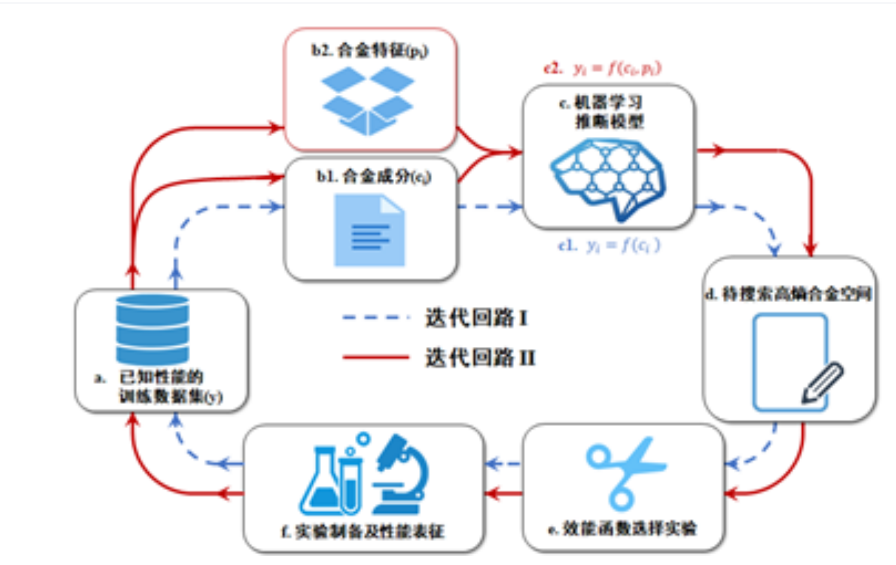

面向性能要求的自适应迭代快速材料设计策略
基于机器学习的自适应迭代设计框架，解决"小数据样本—大搜索空间"的定向性能材料设计问题

模型图示
模型说明
该自适应迭代设计策略，包含模型训练，模型预测，实验设计及实验反馈四个过程。图示的2个平行迭代回路，可用于对比验证材料知识或其它要素融入对迭代设计效率的影响。
以回路1为例说明设计流程：针对不同目标性能的材料设计问题，首先利用已有数据集，训练机器学习模型，再执行对待搜索空间中材料的性能预测，根据模型预测结果值及相关的预测方差，利用效能函数计算得到各材料的EI值，随后可根据需要，选择若干EI值高值材料作为代表合金，进行实验制备和相应性能的表征测试，得到新的数据样本后反馈给初始数据集，重新执行上述回路过程，以此通过不断迭代快速搜索，最终得到特定性能的目标材料。
该策略主要用于解决"小数据样本—大搜索空间"的定向性能材料设计问题，尤其适用于加速具有复杂成分体系的材料设计，及复杂工艺过程的快速优化。
设计流程
1
模型训练
利用已有数据集，训练机器学习模型，建立材料成分与性能之间的映射关系。
2
模型预测
对待搜索空间中的材料进行性能预测，获取预测结果值及相关预测方差。
3
实验设计
利用效能函数计算各材料的EI值，选择若干EI值高值材料作为代表合金。
4
实验反馈
进行实验制备和相应性能的表征测试，得到新的数据样本后反馈给初始数据集，重新执行迭代过程。
应用场景
复杂成分体系设计
适用于加速具有复杂成分体系的材料设计，通过迭代快速搜索最优成分组合。
复杂工艺过程优化
适用于复杂工艺过程的快速优化，通过自适应迭代找到最佳工艺参数。
小数据样本问题
解决"小数据样本—大搜索空间"的定向性能材料设计问题，提高设计效率。
对比验证研究
利用2个平行迭代回路，可用于对比验证材料知识或其它要素融入对迭代设计效率的影响。